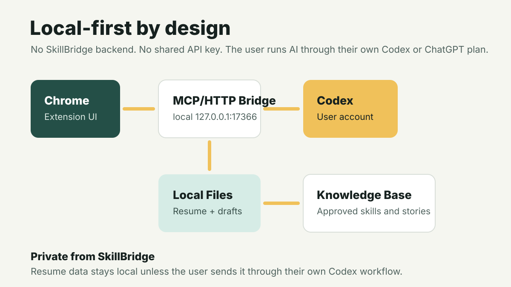

Why I Built It
The idea came from a recruiter who told me that my skills could translate into many different roles. I agreed. As a founder and technical builder, I had gained experience in product work, communication, teaching, documentation, user support, leadership, and problem solving. The hard part was remembering the right stories and translating them honestly for student jobs and non-technical roles.
What It Does
How AI Fits
Codex acts as a reasoning and drafting partner. It helps connect job requirements to transferable experience, reframe technical and founder work for new roles, and generate application drafts. The user still approves what is true before it is used.
Local-First Architecture
SkillBridge AI is built so every user runs it with their own Codex or ChatGPT subscription. The Chrome extension talks to a local MCP/HTTP bridge on the user's machine, and the bridge stores application files locally. There is no central SkillBridge AI backend and no shared API key.
This keeps the project accessible and private from the app maintainer: users do not need to pay a hosted app, the maintainer does not need to operate an AI service, and no SkillBridge server sees the user's resume or generated application materials. When Codex drafts materials, the job post, resume content, and approved knowledge go through the user's own Codex account and plan.

Install With Codex
After cloning the repo, users can paste this into Codex to get a guided local setup.
I cloned the SkillBridge AI repo and want to install it locally. Please set it up without using a hosted backend. Use my own local Codex/ChatGPT subscription for AI work. Tasks: 1. Inspect the repo and explain the architecture briefly. 2. Check that Node.js and Python 3 are available. 3. Tell me where to put my canonical resume as Master Resume.md. 4. If Master Resume.md is missing, create a safe template with headings I can fill in. 5. Start the local MCP/HTTP bridge with node bridge/mcp-http-bridge.js. 6. Confirm the bridge health endpoint works at http://127.0.0.1:17366/health. 7. Give me Chrome steps to load the repo folder as an unpacked extension. 8. Help me open the extension options page and fill in my profile defaults. Important: - Do not upload my resume or generated application files anywhere. - Do not create shared API keys. - Do not submit job applications for me. - Keep all generated application materials local unless I explicitly ask otherwise.
AI suggests. The user approves. Applications stay truthful.